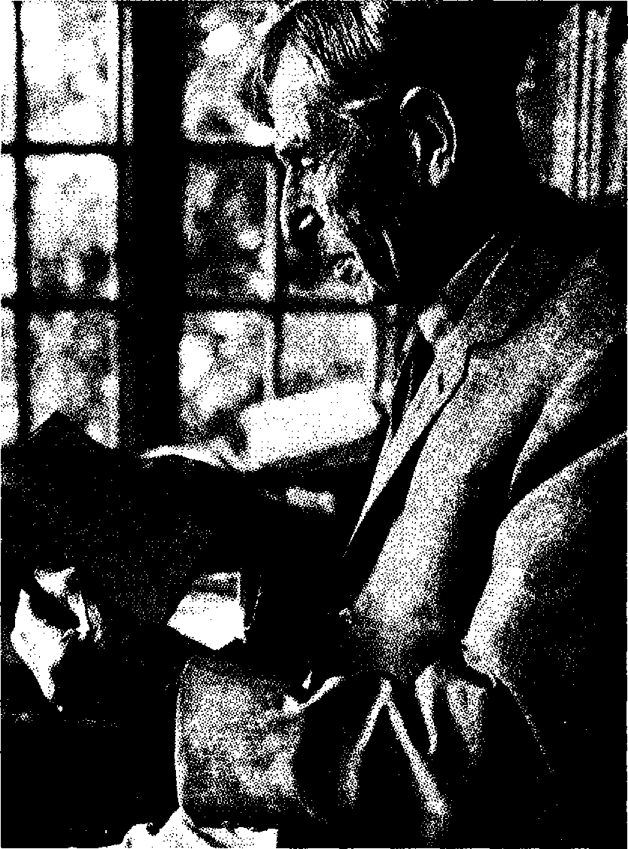

Bölüm 5
Virginia Woolf’un Ölümü
Virginia Woolf, ikinci bir dünya savaşının, Avrupa uygarlığının sonu olacağı saplantısına kapılmıştı. Savaşın ilk iki yılında Nazi Almanya’nın zaferleri, korkularını büsbütün arttırdı. Eşi onu Londra’dan uzaklaştırdı. Kırsal bölgede bir eve yerleştiler. Yalnız Londra değil, bütün ülke geceleyin sürekli havadan bombalanıyordu. Günübirliğine Londra’ya gidince, Bloomsbury mahallesinde Tavistock Square’deki evinin yıkıldığını, çalışma odasında ancak bir tek duvar parçasının ayakta kaldığını, ablası Vanessa’nın bir iki tablosunun bu duvara asılı olduğunu gördü. Düşman uçakları, sığındıkları köy evinin üstünden de geçiyordu her gece; evin camları şangır şangır kırılıyordu. l940 güncesinde, “We lay flat on our faces, hands behind head. Don’t close your teeth, said Leonard” (Ellerimizi başımızın arkasında kavuşturarak yüzükoyun yattık. Dişlerin birbirine değmesin, dedi Leonard) diye anlatır.
Virginia Woolf, savaşın olanca “hayvansılığını ve vahşetini” (“the brutality and wildness”) görüyordu. Ama onu en çok dehşete düşüren savaşın mantıksızlığıydı: “Unreason... someting terrifying unreason” (Akla aykırılık... korkunç bir şey akla aykırılık) der güncesinde. Aynı yıl, yani 1940’da, New Republic dergisinde “Thoughts on Peace in an Air Raid” (Bir Hava Akını sırasında Barış üzerine Düşünceler) adlı güzel bir yazısı çıktı. Bu yazı, Death of the Moth (Pervanenin Ölümü) kitabındaki denemeler arasında yeniden yayınlandı sonraları. Barışa büyük bir özlem duymasının nedeni, bir tek savaş değil, iki savaş yaşamış olmasıydı. 1914’te Birinci Dünya Savaşı başladığında otuz iki yaşındaydı. O savaş süresi, dört yıl “zırdeli olduğunu” (I was raving mad during tlıe last war”) söyler. Çok daha sonraları bile, 1924 güncesinde “All through these years I was creeping about, like a rat struck on the head, and the aeroplanes were over London at night and the streets dark” (O yıllar boyunca, başına vurulmuş bir fare gibi, oradan oraya sürükleniyordum. Uçaklar geceleri Londra’nın üstündeydi ve sokaklar karanlıktı) diye anlatır. Savaşın izleri romanlarında da görülür: Birinci Dünya Savaşı, Jacob’s Room’un baş kişisini öldürür. Mrs. Dalloway’deki Septimus Warren Smith, savaşta geçirdiği şok yüzünden delirip sonunda kendi canına kıyar. The Years’deki Pargiter ailesi, evlerinin bodrumuna sığınmışken, tepelerinde insanların birbirilerini öldürdüklerini bilirler. Between The Acts’te İkinci Dünya Savaşı’nın her an patlak verebileceği besbellidir; “Avrupa toplarla diken dikendir, havada uçaklar vardır” (“Europe bristling with guns, poised with planes”)
Virginia Woolf’un feminizminin bir nedeni de, Three Gineas’te belirttiği gibi, savaşları kadınların değil, erkeklerin yaptığı düşüncesidir: Savaş, bir erkek uğraşıdır; erkeklerin kafa yapısının bir ürünüdür; erkeklerin mesleğidir. Erkekler, kadınları kültürel yaşamdan, toplumsal yaşamdan dışlayarak, kendi egemenliklerini kurmuşlardır. Onların iktidarı tekellerine almaları, önce faşizme, sonra da faşizmin doğal sonucu olan savaşa meydan vermiştir. A Room of One’s Own’da (Kendine ait bir Oda) kadınların -ister İngiliz, ister Fransız, ister Alman olsunlar- bombaların ışığında, onları yöneten erkeklerin yüzlerindeki çirkinliği ve aptallığı görünce şok geçirdiklerini söyler. Virginia Woolf, belki bu yüzden, erkeklerin egemen oldukları bir toplum tarafından onurlandırılmaya katlanamaz. Liverpool Üniversitesi’nin de, Manchester Üniversitesi’nin de ona vermek istedikleri fahri doktorayı, “İt is an utterly corrupt society... And I will take nothing that it can give” (Bu, tümüyle kokuşmuş bir toplumdur... Bana verebileceği hiçbir şeyi almayacağım) diyerek reddeder.
Virginia Woolf, biraz önce belirttiğimiz gibi, Nazilerin kara listesindeydi. Eşi Leonard Woolf’a gelince, hem Yahudi hem de sosyalist olarak, Nazilerin kendilerine düşman saydıkları bir aydındı. İşte bu yüzden Woolf’lar, İngiltere işgal edilirse -o sıralarda her an gerçekleşebilecek bir durumdu bu- arabalarının egzoz dumanıyla zehirlenerek, birlikte ölmeye karar vermişlerdi. Gerçi Almanya, İngiltere’yi işgal edemedi. Ama yaşamaya gücü kalmayan, her an delireceğini hisseden Virginia Woolf, 1941 yılının Nisan ayının ilk günlerinde kendi canına kıydı. İntiharından iki ay önce, güncesinde, “gelecek günler” diye bir kavramı yitirdiğini söyler: “I was thinking: We live without a future, that’s what’s queer. With our noses pressed to a closed door” (Düşünüyordum: Geleceksiz yaşıyoruz. Acayip olan da bu. Burunlarımız kapalı bir kapıya dayalı). 27 Haziran 1940 güncesinde de, bir uçurumun kenarına itilmekte olduklarını, 27 Haziran 1941 tarihli bir günü görebileceğini ummadığını söyler. Görememiştir de. Ama bir bakıma da henüz ölmek istemez; 2 Haziran 1940’da, daha on yıl kadar yaşamak istediğini yazar.

Leonard Woolf karısının güncesini okuyor.
Onu ölüme sürükleyen, yalnız savaştan kaynaklanan ruhsal yıkıntı değil, yazar olarak yaratıcı gücünü yitirdiği kaygısıdır. Londra bombalanırken, “Bu gece kim ölecek?” diye sorar kendi kendine. Arkasından da, “İnsan artık yazamıyorsa, canına kıyması daha iyi olur” (“Who will die tonight?... If one can’t write, one may as well kill oneself”) diye ekler. Korkunç bir ruhsal gerilim içinde bitirdiği son kitabı Between the Acts’ı “tümüyle değersiz” (“completely worthless”) sanır. Yalnız artık yazamadığı değil, bundan önce yazdıklarını da kimselerin okumadığı kuruntusuna kapılır. “No audience. No echo. That’s part of one’s death” (Dinleyen yok. Yankı yok. İnsanın ölümünün bir parçasıdır bu) der. Bu kaygısında bir gerçek payı da vardır. Çünkü Virginia Woolf bugün olduğu kadar ünlü değildi öldüğü yıl. İngiliz edebiyatının bir çeşit özel ansiklopedisi olan Oxford Companion to English Literature’ın 1942 baskısında ancak on altı satır ayrılır ona. 1962 baskısında aynı durum devam eder. Ama 1985 baskısında, neredeyse iki tam sütun verilir.
Bir savaş içinde yaşamanın felâketi, artık yazmamak kaygısı, her an delirmek korkusuyla birleşince, denizi büyük bir tutkuyla seven, ama denize girmediği için yüzmesini bilmeyen Virginia Woolf, ceplerini taşlarla doldurup, kendini Ouse ırmağına attı. Yürürken kullandığı bastonu, ırmağın kıyısında bulundu. Elli dokuz yaşındaydı o sırada.
Birçok dizesinden anladığımız gibi, boğularak öleceği Shelley’nin içine doğduğu gibi, suda öleceği de Virginia Woolf’un içine doğmuştu. 1931’de yazdığı bir mektupta “I shall be under the pond with the goldfish swimming over me” (Havuzun dibinde olacağım; kırmızı balıklar üstümde yüzecek) der. İlk romanı The Voyage Out’un baş kişisi Rachel Vinrace, kendini Thames nehrinin altında yürürken görür. Sonra sular “başının üstünde kapanırlar” (“close over her head”). Yalnız To the Lighthouse ve The Waves’de değil, bütün romanlarında, akan, kabaran, gelip giden su imgeleri vardır. Ölümünden altı yıl önce, “Düşümde kendini öldüren insanlar gördüm; bedenleri suyun içinden fırlıyordu” (‘I dreamt of men committing suicide and could see the bodies shooting throııgh the ıvater”) diye yazar güncesinde. Virginia Woolf’un ölüsü de sularda yüzdü uzun süre. Ancak on beş gün sonra bulunabildi.
Virginia Woolf, canına kıymadan önce, ablası Vanessa’ya ve eşi Leonard Woolf’a birer mektup yazmıştı. Eşine mektubunda şöyle der:
“I feel sure I am going mad again. I feel sure that we can’t go through another of those terrible times. And I shan’t recover this time. I begin to hear voices... So I am doing what seems the best thing to do. You have given me the greatest possible happiness... I can’t fight any longer. I know that I am spoiling your life... I owe all the happiness of my life to you... If anybody could have saved me it would have been you. Everthing has gone from me except the certainty of your goodness. I can’t go on spoiling your life any longer... I don’t think two people could have been happier than we have been.”
(Gene delireceğimden eminim. O korkunç günleri yeniden yaşamaya katlanamayacağımı hissediyorum. Bu kez iyileşemeyeceğim üstelik... Sesler duymaya başlıyorum... Bu yüzden de, yapabileceğim en doğru şeyi yapıyorum. Sen, mutlulukların en büyüğünü verdin bana… Bundan böyle savaşamam... Senin yaşamını bozduğumu biliyorum... Kendi yaşamımın bütün mutluluğunu sana borçluyum... Beni herhangi bir kişi kurtarabilseydi, o kişi sen olurdun. Senin iyiliğine güvenimden başka her şeyimi yitirdim... Artık senin yaşamını bozamam. Hiç kimse bizim ikimizden daha mutlu olmamıştır.)